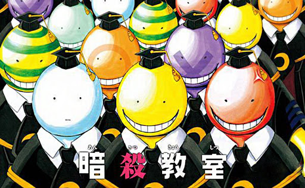
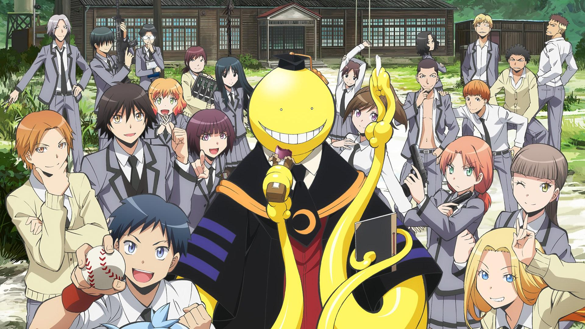
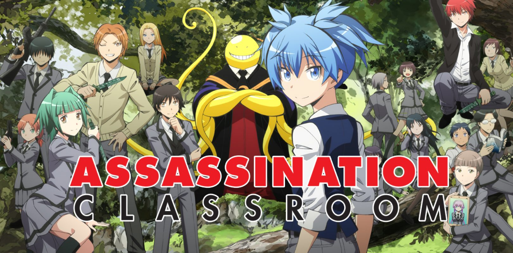
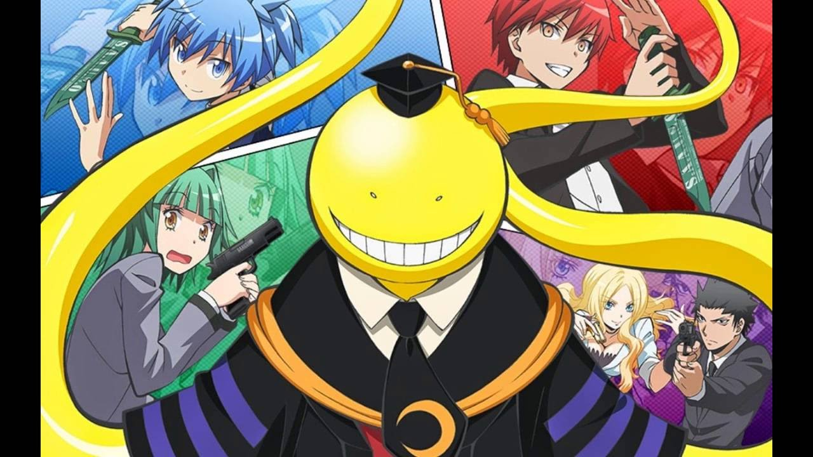

Ansatsu kyōshitsu
Galeria zdjęć:
   
Spis treści:
Czym jest Assasination classroom
Klasa skrytobójców (jap. 暗殺教室 Ansatsu kyōshitsu) – shōnen-manga autorstwa Yūseia Matsui, publikowana na łamach magazynu „Shūkan Shōnen Jump” wydawnictwa Shūeisha od 2 lipca 2012 do 25 marca 2016.
Pojedyncze rozdziały zostały potem zebrane do 21 tomów typu tankōbon wydanych od 2 listopada 2012 do 4 lipca 2016.
Na podstawie mangi powstała adaptacja anime składająca się z dwóch sezonów i jednego odcinka OVA, dwa filmy live action, jeden animowany film pełnometrażowy oraz trzy gry komputerowe.
Adaptacja anime w oparciu o mangę została zapoczątkowana w formie 23-minutowego odcinka OVA wyświetlanego od 6 października do 24 listopada 2013 w ramach Jump Super Anime Tour 2013. Za produkcję odcinka OVA odpowiadało studio Brain's Base,
za reżyserię Keiji Gotō, natomiast za scenariusz – Tomoki Kikuya.
23 czerwca 2014 poinformowano, że manga otrzyma adaptację anime wyprodukowaną przez studio Lerche. Premiera odbyła się 9 stycznia 2015, zaś emisja pierwszego sezonu trwała do 19 czerwca++, w nakładzie 22 odcinków.
Podczas emisji anime, 24 kwietnia 2015 podczas wydarzenia, które odbyło się w TOHO Cinemas Roppongi Hills ogłoszono, że seria w 2016 roku otrzyma drugi sezon anime.
Pojedyncze rozdziały zostały potem zebrane do 21 tomów typu tankōbon wydanych od 2 listopada 2012 do 4 lipca 2016.
Na podstawie mangi powstała adaptacja anime składająca się z dwóch sezonów i jednego odcinka OVA, dwa filmy live action, jeden animowany film pełnometrażowy oraz trzy gry komputerowe.
Adaptacja anime w oparciu o mangę została zapoczątkowana w formie 23-minutowego odcinka OVA wyświetlanego od 6 października do 24 listopada 2013 w ramach Jump Super Anime Tour 2013. Za produkcję odcinka OVA odpowiadało studio Brain's Base,
za reżyserię Keiji Gotō, natomiast za scenariusz – Tomoki Kikuya.
23 czerwca 2014 poinformowano, że manga otrzyma adaptację anime wyprodukowaną przez studio Lerche. Premiera odbyła się 9 stycznia 2015, zaś emisja pierwszego sezonu trwała do 19 czerwca++, w nakładzie 22 odcinków.
Podczas emisji anime, 24 kwietnia 2015 podczas wydarzenia, które odbyło się w TOHO Cinemas Roppongi Hills ogłoszono, że seria w 2016 roku otrzyma drugi sezon anime.
Powrót na górę strony
Fabuła
Akcja mangi rozpoczyna się gdy potężny potwór niszczy 70% powierzchni Księżyca. Twierdzi również, że w ciągu roku zniszczy planetę, a z drugiej strony oferuje całemu światu szansę uniknięcia tego losu.
W klasie 3-E gimnazjum Kunugigaoka, rozpoczyna pracę jako nauczyciel, gdzie uczy swoich uczniów zwykłych przedmiotów, a także sposobów zabijania.
Natomiast rząd Japonii ogłosił, że każdy z uczniów, któremu uda się zabić potwora nazwanego „Koro-sensei” (jap. 殺せんせー Korosensē) (akronim słów „Koro-senai” (jap. 殺せない dosł. niezabijany) i „sensei” (jap. 先生 dosł. nauczyciel)),
otrzyma nagrodę w wysokości 10 miliardów jenów. Jednak okazuje się, że to zadanie jest niewykonalne, ponieważ potwór ma między innymi:
przyspieszoną regenerację, potrafi się klonować, posiada niezwyciężoną formę oraz zdolność do poruszania się i latania z prędkością 20 machów.
Z drugiej strony jest najlepszym nauczycielem. W dalszej części fabuły sytuacja staje się jeszcze bardziej skomplikowana, gdy inni zabójcy żądają nagrody za zabicie Koro-sensei'a,
Uczniowie zostają zapoznani z tajemnicami swojego nauczyciela, m.in. jego planami zniszczenia Księżyca i związkami z poprzednim nauczycielem, a także prawdziwym powodem, dla którego musi zostać zabity przed końcem roku szkolnego.
Jeden z uczniów z klasy 3-E, Nagisa Shiota, postanawia sporządzać listę wszystkich słabości Koro-sensei'a. Początkowo może wydawać się, że jest jednym z najsłabszych uczniów w klasie, ale później staje się jednym z najbardziej zręcznych zabójców.
W klasie 3-E gimnazjum Kunugigaoka, rozpoczyna pracę jako nauczyciel, gdzie uczy swoich uczniów zwykłych przedmiotów, a także sposobów zabijania.
Natomiast rząd Japonii ogłosił, że każdy z uczniów, któremu uda się zabić potwora nazwanego „Koro-sensei” (jap. 殺せんせー Korosensē) (akronim słów „Koro-senai” (jap. 殺せない dosł. niezabijany) i „sensei” (jap. 先生 dosł. nauczyciel)),
otrzyma nagrodę w wysokości 10 miliardów jenów. Jednak okazuje się, że to zadanie jest niewykonalne, ponieważ potwór ma między innymi:
przyspieszoną regenerację, potrafi się klonować, posiada niezwyciężoną formę oraz zdolność do poruszania się i latania z prędkością 20 machów.
Z drugiej strony jest najlepszym nauczycielem. W dalszej części fabuły sytuacja staje się jeszcze bardziej skomplikowana, gdy inni zabójcy żądają nagrody za zabicie Koro-sensei'a,
Uczniowie zostają zapoznani z tajemnicami swojego nauczyciela, m.in. jego planami zniszczenia Księżyca i związkami z poprzednim nauczycielem, a także prawdziwym powodem, dla którego musi zostać zabity przed końcem roku szkolnego.
Jeden z uczniów z klasy 3-E, Nagisa Shiota, postanawia sporządzać listę wszystkich słabości Koro-sensei'a. Początkowo może wydawać się, że jest jednym z najsłabszych uczniów w klasie, ale później staje się jednym z najbardziej zręcznych zabójców.
Powrót na górę strony
Moje ulubione postaci:
- Karma Akabane jest uczniem Koro-sensei'a w klasie 3-E Gimnazjum Kunugigaoka.Karma to szkolny rozrabiaka - zawsze gotów, by spłatać komuś psikusa lub dokuczyć.
Jest dość wredny, bardzo pewny siebie, przekonany o swojej wyższości i wysokich umiejętnościach (przynajmniej do czasu porażki na egzaminach śródsemestralnych).
Nie można mu także odmówić sprytu, inteligencji ani talentu do nauki. Chłopak lubi rywalizować z osobami na swoim poziomie, czego dowodzi w swojej relacji z młodszym Asano. - Nagisa Shiota jest uczniem Koro-sensei'a w klasie 3-E Gimnazjum Kunugigaoka i głównym narratorem.
Nagisa jest spokojną, poukładaną i przyjazną osobą. Ma tendencję do zwracania szczególnej uwagi na Koro-sensei'a w nadziei na zrozumienie motywów tajemniczej istoty.
Dodatkowo opisuje w swoim notatniku wszystkie słabości swojego nauczyciela, jakie tylko jest w stanie zauważyć. Uważa, że dzięki temu łatwiej będzie go zlikwidować.
Pomimo spokojnego zachowania, kryje w sobie głęboką niepewność, jeśli chodzi o talenty i sposób postrzegania przez ludzi, wokół niego.
Wynika to z braku celów i ogólnego pesymizmu, co do jego własnej przyszłości. - Koro-sensei jest nauczycielem klasy 3-E w Gimnazjum Kunugigaoka.Na początku był przedstawiony jako osoba żarliwa, która domagała się absurdalnych i pozornie przyziemnych żądań, mimo oświadczenia, że jest zdolny do zniszczenia Ziemi w ciągu
roku.
Jednak mimo to dbał o dobro swoich uczniów i chronił ich za wszelką cenę. Koro-sensei był na tyle wykształcony, że mógł sam uczyć uczniów prawie każdego przedmiotu. Sprawdziany układał dla każdego ucznia tak, by mógł wykazać się swoją wiedzą.
Uwielbiał słodycze i często miał ich spory zapas. Okazał się też perwersyjny, podobnie jak jeden z jego uczniów, Okajima.
Ta cecha ukazała się przez efekt uboczny eksperymentów, przez co nie potrafił ukrywać swoich prawdziwych uczuć.
Był dobrą osobą, która w jednej chwili potrafiła zmienić swój ton z głupkowatego na bardzo poważny. Jednym z atutów Koro-sensei'a jest fakt, że potrafił on z każdym ze swoich uczniów nawiązać indywidualną więź.
To główny powód, dlaczego wszyscy uczniowie go szanowali, respektowali, pomimo faktu, że w ciągu roku mógł zniszczyć planetę. Zawsze brał pod uwagę potrzeby i zainteresowania każdego ucznia i starał się ich nakierować na odpowiednie tory, jak i również pomagał uczniom w rozwiązaniu ich problemów.
Powrót na górę strony
2020 © Jakub Żuk 2tb - Wszelkie prawa zastrzeżone